Module 3: Loops: the for-loop
Objectives
By the end of this module, for simple HelloWorld-like programs, you will be able to:
- Identify the new syntactic elements with the basic output-only for-loop.
- Demonstrate ability to mentally trace execution of for-loops.
- Produce desired output using for-loop and print’s.
- Distinguish between count-up and count-down loops.
- Use some nested for-loops with independent variables.
- Use some nested for-loops with dependent conditions.
- Identify and correct syntax errors related to above objectives.
- Distinguish between syntax errors and debugging.
3.0 An example
Consider the following program:
def print_big_M():
print('* *')
print('** **')
print('* * *')
print('* *')
print('* *\n')
def print_big_O():
print('*****')
print('* *')
print('* *')
print('* *')
print('*****\n')
print_big_M()
print_big_O()
print_big_O() # 1st repetition
print_big_O() # 2nd repetition
print_big_O()
print_big_O()
print_big_O() # 5th repetition - 6 O's in allWhat we would like is a way to organize repetition.
We will do this using one version (there are many) of the for-loop, one of the most important programming constructs:
def print_big_M():
print('* *')
print('** **')
print('* * *')
print('* *')
print('* *\n')
def print_big_O():
print('*****')
print('* *')
print('* *')
print('* *')
print('*****\n')
print_big_M()
for i in range(6):
print_big_O()Let’s zoom in on the for-loop and examine it.
To do so, we’ll write a different for-loop:
for i in range(6):
print(i)Let’s now examine elements of the loop: - There’s the special word for 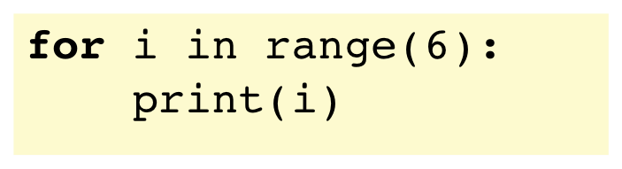
Then, there’s the for-loop variable 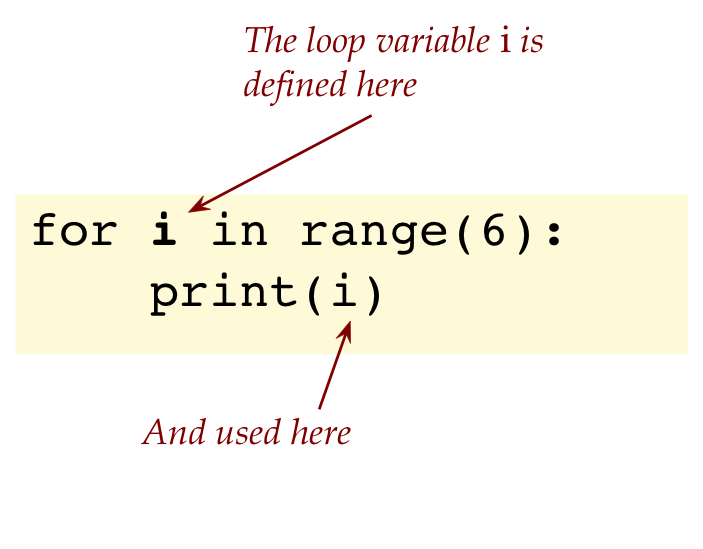
The special word 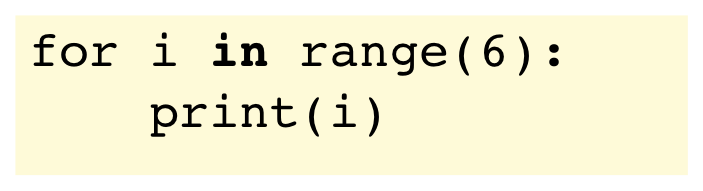
The element that controls the spread of different values that variable
itakes on at each iteration of the loop: 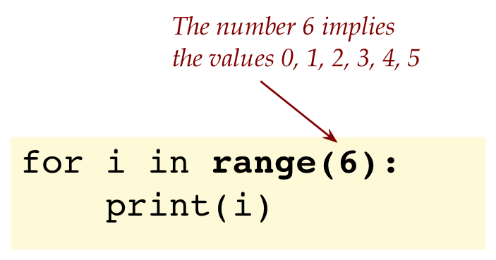The colon at the end: 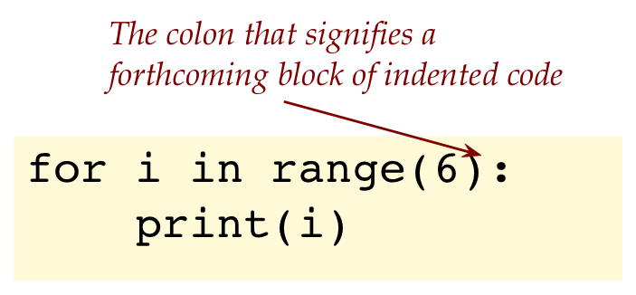
Finally, the block of code (in this case, just one line) that’s called the body of the loop: 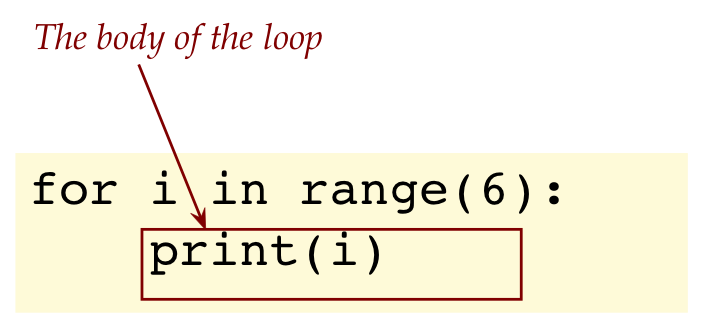
Let’s change the program slightly and then set about explaining how the loop works:
for i in range(6):
print(i)
print('Hello')Observe that the body of this for-loop has two statements: 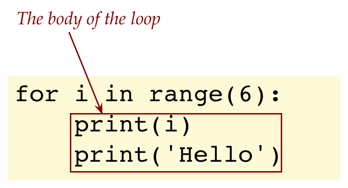
Let’s now use a slightly fictionalized way to explain the action of this loop:
Think of the Python part of your computer (since your laptop does many things) as reading your program and then carrying out the instructions.
When it encounters the
forword, it says “Ah, here’s a for-loop”.Then it sees the variable
iand says (to itself), “This is the variable whose value will change after each iteration”.Then it sees the term
range(6)and says “Oh, i will start at 0 and end just before 6, which means it will be 0 in the first iteration, 1 in the second, 2 in the third, 3 in the fourth, 4 in the fifth, 5 in the last”.Then, it starts executing the body of the loop for the first iteration:
- For the first iteration, i=0.
- The entire body of the loop executes with i being replaced by 0: 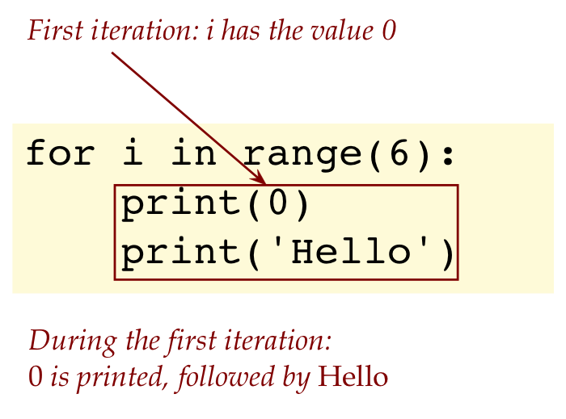
- For the second iteration, i=1 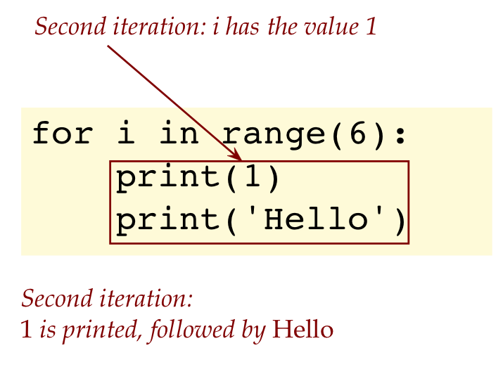
- Third iteration: 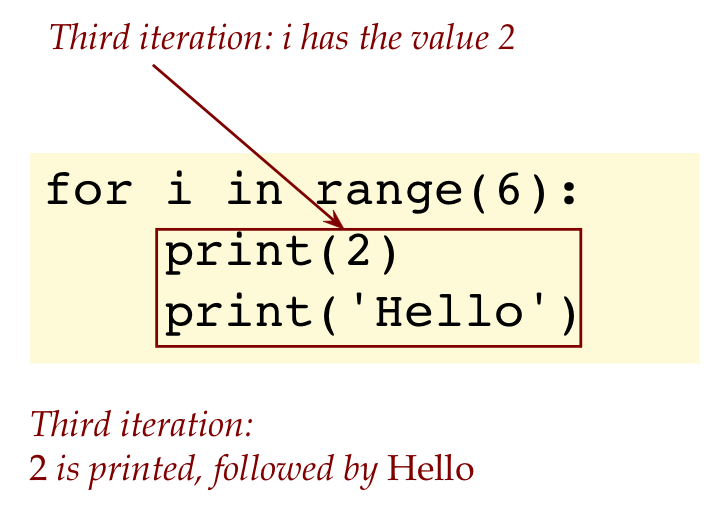
- Fourth iteration:

- Fifth iteration:
- Sixth and final iteration: 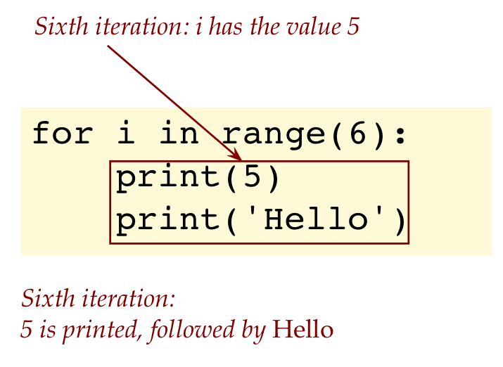
Now the for-loop is done and the execution goes past the whole for-loop to whatever’s there.
- In this case, there’s no other code and the program completes.
3.5 Video
3.1 Variations
To explore for-loops further, we’ll look at some variations of the basic for-loop:
1. First, we could have named our for-loop variable
for count in range(6):
print(count)It’s customary to use short variable names like i and j
2. To go through a loop five times, any range of numbers will do:
for i in range(10, 16):
print(i)- Here, the
rangefeature has both a starting value (10) and just-after-ending value (16) specified. - This will print the numbers 10 through 15.
3. We don’t have to increment the for-loop variable by 1.
for i in range(10, 16, 2):
print(i)- This prints the numbers 10, 12, 14.
- The number 2 in
range(10, 16, 2)specifies an increment amount. - Thus, we start with i taking the value 10 in the first iteration.
- In the second iteration, i becomes 12 (because 10+2 = 12).
- In the third iteration, i becomes 14 (incrementing 12 by 2).
- If we were to increment 14 by 2 it becomes 16 which is past the last value allowed.
- Important: think of 16 as “the variable cannot have this value or anything past this value”.
4. We can decrement, as in:
for i in range(16, 10, -1):
print(i)- This will print 16, 15, 14, 13, 12, 11.
- We start with 16 (the first part of the range).
- After each iteration we apply the increment/decrement amount.
- In this case, applying -1 to 16 gives us 15, which gets printed.
- Then, the third time through, i becomes 14. And so on.
- In the last iteration, i becomes 11.
- Finally, when i is decremented to 10, the loop is ended.
3.9 Video
3.2 Nested for-loops
We’ll start by writing a program to print a little number triangle like this:
1
22
333
4444Notice: there’s repetition across a row of numbers: a potential use of for-loops!
We’ll do this in stages, starting with this program:
print(1) # print 1 all by itself
for i in range(2): # i will start at 0, go up to 1
print(2, end='')
print() # Print nothing but go to the next line.
for i in range(3): # i ranges from 0 to 2
print(3, end='')
print()
for i in range(4): # i ranges from 0 to 3
print(4, end='')
print()Observe:
- We’ve used
end=''(two single quotes in succession) to avoid printing each number on a single line. - One could use two double quotes in succession as well.
print()merely goes to the next line.
(Or, stated differently, ends the current line being printed.)
Next, observe that the upper-limits of the for-loops are themselves increasing: 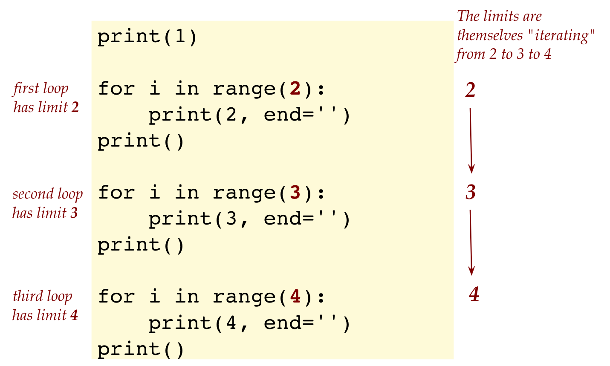
Also, observe that the very thing we’re printing across a row is the loop limit itself: 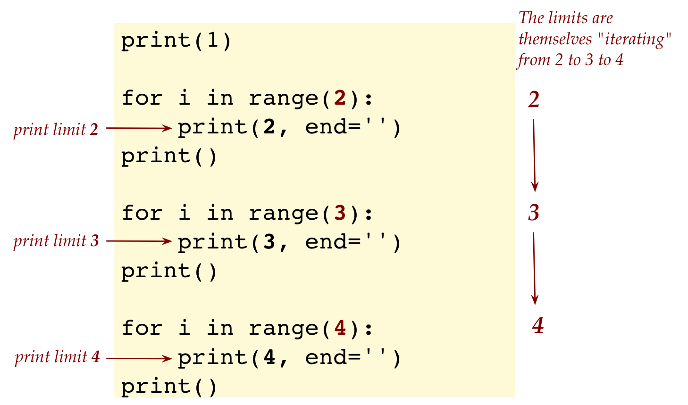
Another way to say this:When the value is 2, print a row of two 2’s
When the value is 3, print a row of three 3’s
When the value is 4, print a row of four 4’s
Thus, we could try to do is:
for j in range(2, 5): # let j iterate from 2 to 4
# print j occurences of j using a loopBut we already know how to print a row of j’s:
for j in range(2, 5): # let j iterate from 2 to 4
# print a row of j's (j of them)
for i in range (j):
print(j, end='')Let’s put this together in a complete program:
print(1) # print 1 all by itself
for j in range(2, 5): # j iterates from 2 to 4
for i in range(j): # for each j, print j of them
print(j, end='')
print() 3.12 Video
Let’s review what we learned above:
- The outer loop variable’s value is used in the inner loop: 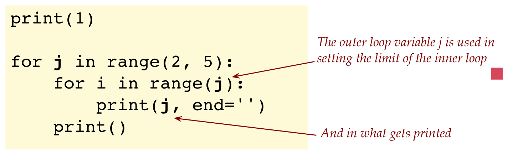
- Consider a single iteration of the outer-loop (e.g., when
jis3). 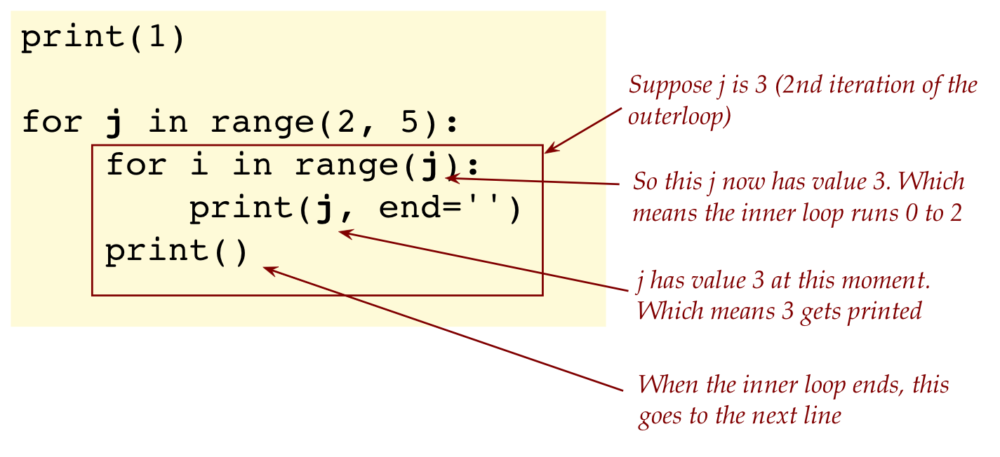- For this value of
j, the inner loop executesjtimes. - Thus, when
jis3, the inner loop has3iterations.
- For this value of
- This is an example of a nested for-loop in which the inner loop’s execution depends on the value of the outer-loop variable.
- Another way to say it: a nested for-loop has one for-loop inside another.
- We will use nesting in other contexts as well, when one structure is placed inside another.
3.3 Tracing through a program in detail
We’ll now look at an example of how to execute a program “by hand”. That is, how to trace a program’s execution by painstakingly following its execution step-by-step.
At first this will appear tedious, but it is critical to a firm understanding of how programs execute, and eventually to your own writing of programs.
We’ll first do a longer, more narrative version here, and then show you how to submit a much shorter version for your exercises.
For our example, let’s look at the program we last saw:
print(1)
for j in range(2, 5):
for i in range(j):
print(j, end='')
print() Let’s now dive into the longer version, just for the sake of understanding.
To make best use of this:
- Open this same page in another browser, and have the program side-by-side, as you read what’s below.
- Read out aloud what you see below.
Ready? Let’s trace through: 
Right at the start, the first line is
print(1). This prints out 1, and moves to the next line.
Initially j=2 at the start of the outer for-loop:

Since j is 2, it’s within the range, and we enter the outer for-loop.
Now we encounter the inner for-loop, where i is set to 0
Notewhen
rangehas only one number specified, it’s understood to be the upper limit.The upper limit is the current value of j, which is 2.

Inside the inner loop, we execute
print(1), which, because j is now 2, will print 2.
We’re at the end of the inner loop, so now i increments to 1:

So now inside the inner-loop, we print 2 again

Then, at the end of the inner for-loop, we return to the top where i increments to 2.
Since i is at the limit, we exit the inner for-loop.
 Note
NoteThe inner loop iterated twice.
Next, we go past the inner loop to
print(), which goes to the beginning of the next line.
This completes the first iteration of the outer, after which we go to the top of the outerloop and increment j.

Execution now enters the outerloop with j set to 3.
- Now we encounter the inner for-loop, where i is set to 0
- The upper limit is the current value of j, which is 3.
- So, the inner loop executes three times, with i first set to 0, then to 1, then to 2.
- This will result in printing three 3’s.
- When i becomes 3, it hits the inner-loop limit and proceeds to the
print()that follows. - The output so far is:
1 2 2 3 3 3
This completes the iterations of the inner loop with the outer loop j set to 3.
Next, j becomes 4

- The inner loop starts with i set to 0.
- Each time through i increments.
- Until i hits the limit j (which is 4 now).
- This results in four 4’s being printed in a line.
- Then we come out of the inner loop and execute
print(), which goes to the next line.
The output so far is
1 2 2 3 3 3 4 4 4 4Finally at the end of the outer loop, j becomes 5 and hits the limit of the outer loop

Yes, that was long. But doing this many times will help you understand how to read programs. Later, you will become good at this and will, with a quick glance at the inner-loop, say “Oh, this prints 2 twice in the first iteration of the outer.”
When you need to submit a program’s traced-out execution, use a shorter version. For example, see this PDF for the above program.
3.15 Video
3.18 Video
3.4 Reading and writing
Let’s consider how to read a single for-loop, such as:
for k in range(1, 10, 2):
print(k, end=' ')
print(2*k)
print('-')Instead of explaining the execution, let’s focus on how to read such a program:
- The first thing to do is to observe two parts to the loop:

- Next, study the for-statement to understand the nature of the iteration:

- Now look inside the body:

Let’s also point out what to keep in mind when writing:
- First, the for-loop header or for-statement:

- Next, the loop body:

- Important: we will be nitpicky about writing because good writing habits will save you a lot of trouble.
Next, let’s combine reading with mental execution. Consider the following program:
def functionOne():
print('*', end='')
def functionTwo():
print('*')
def functionThree():
for j in range(0, 5):
functionOne()
functionTwo()
for i in range(1, 11, 2):
functionThree()3.21 Video
3.5 When things go wrong
As code gets more complex, it gets easier to make mistakes, and harder to find them.
In each of the programs below, try to determine the error without compiling the program. Then, write up the program, compile and see what the compiler says. After that, fix the error.
Let’s point out the difference between a syntax error and a logical error:
- A syntax error will not allow a program to run.
- This means you are using the language incorrectly.
- On the other hand, you could have a program that has no syntax errors (it runs) but it does not produce the desired output. This means there’s a logical error.
- The process of identifying and fixing logical errors is called debugging.
- A bug is a logical error.
3.6 A peek at the future
Consider the following program:
import tkinter as tk
window = tk.Tk()
canvas = tk.Canvas(master=window, width=200, height=100)
canvas.pack()
def draw_rectangles():
for i in range(10, 51, 10):
canvas.create_rectangle(
3*i, i, 3*i+20, i+10, outline="blue")
draw_rectangles()
window.mainloop()Download the above program, my_forloop_rectangle.py, and execute the program. If you’re feeling brave, add a second for-loop so that output looks like: 
Let’s point out the for-loop’s part in the program:
- First, we need to understand how coordinates work differently in Python:

- Next, let’s read the for-loop statement to see how it iterates:

- We can see that i will be 10 the first time through the loop.
- Then i becomes 20, then 30 etc until 50.
- Thus, there are 5 iterations through the loop.
- Notice how i is used in the calculation of the measurements needed to draw the rectangle:
 (We spilled a line of code over two lines to make the font large enough.)
(We spilled a line of code over two lines to make the font large enough.)
- When i is 10, the first rectangle’s top left corner gets drawn at 30 (which is 3 times i, or 3*i) from the left side, and 10 down from the top.
- In the second iteration i is 20, which means the top left corner is 60 from the left. And so on.
About animations:
- Even if an object moves across a screen (and is in different positions on the screen), there is something that “repeats”.
- What repeats is the drawing of the object in different places (with a gap in time to create the illusion of real movement).
- Thus, when locations can be calculated we can use a loop to iterate through the different positions.
- This is essentially how animation works.
3.7 Some things to keep mind
Let’s introduce the notion of reserved words:
- Some words like
forandinare special to the language and are called reserved words or key words of the language.
- There are special rules associated with the usage of such reserved words, which we’ll describe over time. For now, we’re just pointing them out.
- Another example of a reserved word we’ve seen:
def - It turns out that, even though
printlooks like it should be a reserved word, it’s in fact not.- At this stage, the distinction is not clear and that’s fine.
- As you learn the language, you’ll learn how to distinguish.
Counting from 0:
- When a single number like 6 is specified in the
rangeas inrange(6)
- Thus, i is 0 the first time, then 1, then 2, and so on until i = 5 (last time through).
- The number 6 specifies that i cannot be 6 or higher.
- Thus, there is a certain strangeness to get used to:
- Unlike math (where counting starts from 1), in programming, the convention is to start from 0.
(Did you notice that’s why we started with Module 0?) - The other strangeness is specifying the limit as one higher (6) than than last iteration value (5).
- Unlike math (where counting starts from 1), in programming, the convention is to start from 0.
The different uses of range
- When a single number is specified, as in
range(6)the implied start is 0. - When two numbers are specified as in:
range(10, 16)the first is the start of the count, and the second is the limit:
- Thus i is 10 the first time (this is the first thing that’s printed).
- Then i becomes 11.
- Then 12, and so on until the last time through when i is 15.
- When three numbers are specified as in
range(10, 16, 2)the third number is the increment.
- Here, i starts as 10 in the first iteration.
- Then, i is 12 in the second iteration.
- Then i becomes 14. This is the last iteration because after that i would be 16, which ends the loop.
- Using
range(10, 15, 2)produces the same result as above, and in fact preferable.
About comments:
First, comments are for us to read. The computer does not read them.
Thus, in terms of execution, this program
# list the even numbers between 10 and 14, inclusive: for i in range(10, 15, 2): # Notice the increment print(i)will result in the exact output as this one:
for i in range(10, 15, 2): print(i)We will use comments in two ways, as in the above example:
- The first comment is an example of using a comment as a prelude to code, to explain what’s coming or intended.
- The second kind that is to the right side of a line of code is like an alert: we’ll use this to point out something to pay attention to in that line of code.
3.8 Meta
We will occasionally step back from the details to comment on how best to learn.
This module was a bit different, a little more challenging than modules 1-2.
What to keep in mind:
- It is only natural to feel like you are in an alien landscape.
⇒ You would feel no different doing the first few modules while learning a foreign language with an entirely different script. - It takes a while to absorb some of the details, and that’s just fine.
- Notice that some exercises were significantly more challenging than others:
- In prior modules, you merely typed in something and tried it out, or make a small change.
- With some exercises (like brrrrr) you had to do it all from scratch.
- Both involved problem-solving
⇒ Taking a problem described in words and finding a solution.
- Problem-solving is a higher-level skill than programming.
- It takes time to acquire this skill.
- There is no magic formula or words to simply make “problem solving” work for you.
- The only way is to develop this skill is to struggle with problems, and with lots of them.
- Finally, think about this:
- Anyone can acquire both programming and problem-solving skills with sufficient dedication. So why not you?
- If you get past these hurdles with determination, you will leave in the dust all those who gave up earlier.